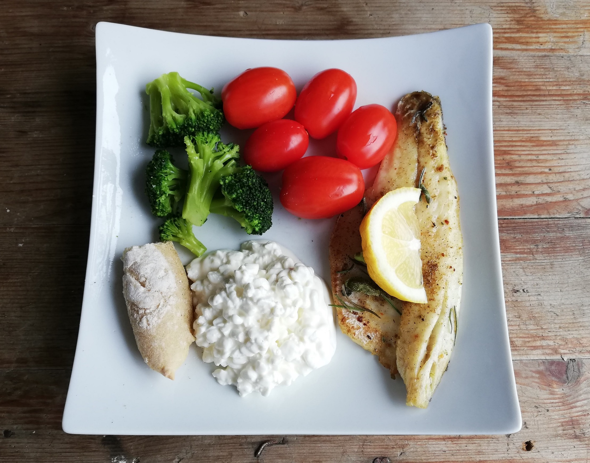

Dorade auf frischem Gemüse

Zutaten für
Zubereitung
Die Dorade einige Stunden vor dem Braten aus dem Kühlschrank nehmen. Das Gemüse in Stücke schneiden und für ca. 15 Minuten in einem Topf dünsten. Währenddessen die leicht eingeölte Pfanne erhitzen und den Teller im Backrohr wärmen. Die Dorade beidseitig goldbraun anbraten. Mit Rosmarin und Salz würzen. Anschließend den gebratenen Fisch auf dem Teller mit dem Gemüse, den Cocktail-Tomaten sowie dem Hüttenkäse und dem selbstgemachten Brot anrichten. Fertig! Guten Appetit!
Rezept erstellt von
Lukas Klammer